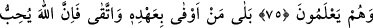

EHL-İ KİTÂBIN BÂZI ÖZELLİKLERİ
75. Ehl-i kitaptan öylesi vardır ki, ona yüklerle mal emânet bıraksan, onu sana
noksansız iâde eder. Fakat onlardan öylesi de vardır ki, ona bir dinar emânet
bıraksan, tepesine dikilip durmazsan onu sana iâde etmez. Bu da onların;
“Ümmîlere karşı yaptıklarımızdan dolayı bize vebâl yoktur” demelerindendir. Allah
adına bile bile yalan söylüyorlar.
76. Hayır! (Gerçek onların dediği değil.) Her kim sözünü yerine getirir ve
kötülükten sakınırsa, bilsin ki Allah sakınanları sever.